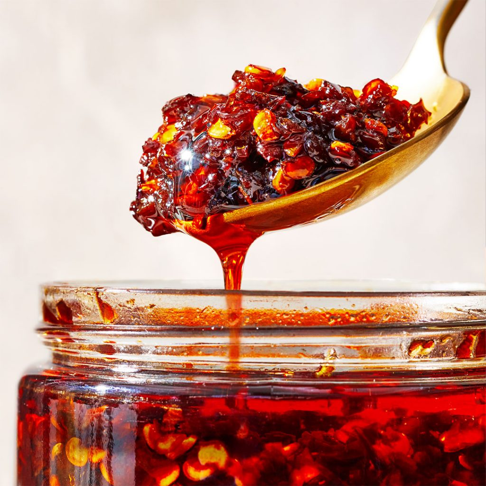

Salsa Macha

The 'Salsa Macha' is a mexican (often) spicy sauce. Throughout the country, you can find different versions of this sauce, the main difference: the chili used.
Other than that, the recipe or the steps shouldn't change that much. This is a fairly spicy sauce (even for people used to consuming it!) so be
careful when you give it a try.
Ingredients
- 16 garlic cloves
- 460 ml of olive oil
- 1/2 cup of nuts
- 1/2 cup of 'Chile de árbol' chilis
- 1 teaspoon of apple cider vinegar
Steps
- Squeeze all of the garlic cloves with a knife or the palm of your hand
- Add 230 ml of olive oil to a low-heat pan
- Once it's hot, add all of the garlic cloves
- ~2 mins later, move the garlic along with the oil to a bowl and let it cool down
- On the same pot, add another 230 ml of olive oil and add 1/2 cup of 'Chile de árbol' chilis
- Move them around for 1-2 minutes to avoid burning them
- Move the chilis along with the oil to a bowl and let it cool down
- Using the same pot (without adding more oil) and add the 1/2 cup of nuts
- Move them around for ~30 secs and move them to the chilis bowl from earlier
- Blend all of the ingredients along with a pinch of salt, a pinch of pepper and a teaspoon of apple cider vinegar
- That's it! Your sauce is good to go!